Installations interactives, réalité augmentée et objets connectés. Parfois le numérique seul ne suffit pas.
Quatre points de départ, selon où en est votre projet. Trouvez le vôtre.
Avant d'investir dans une techno ou un partenaire, on en parle. Je vous aide à poser les bonnes questions, cadrer le projet et éviter les mauvais choix — avant que le budget parte dans la mauvaise direction.
Appelez-moiC'est ma plus grande force : imaginer l'expérience elle-même — comment les gens vont interagir, ce qu'ils vont ressentir, ce qui va les surprendre — avant même de penser à la technologie qui va la porter.
Concevons votre expérienceVous avez déjà le design, le plan, la vision créative. Je prends en charge le développement et l'intégration : C++, C#, Python, embarqué — sans sur-ingénierie, sans dépendances inutiles.
Parlons développementCapteurs, microcontrôleurs, projections, détection de mouvement — je connecte votre expérience immersive au monde physique, de façon invisible et robuste.
Ajoutons de l'interactivité physiqueDes projets livrés au Musée de la civilisation, au CHU de Québec, au Carnaval de Québec et ailleurs.
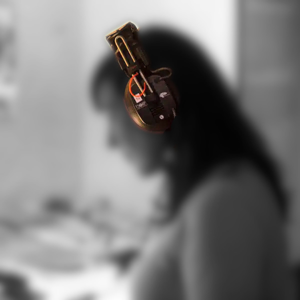
Dispositif d'expérience sonore augmentée pour l'exposition « Sur parole. Le son du rap québ. »
Musée de la civilisation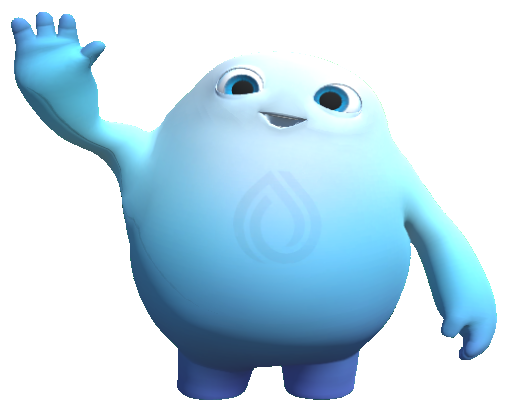
Expérience de réalité augmentée visant à diminuer le stress des enfants avant une visite au bloc opératoire.
CHU de Québec / Fondation du CHU de Québec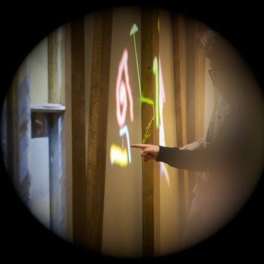
Les enfants dessinent avec de la lumière sur les murs du grenier de l'exposition « Ma maison ».
Musée de la civilisation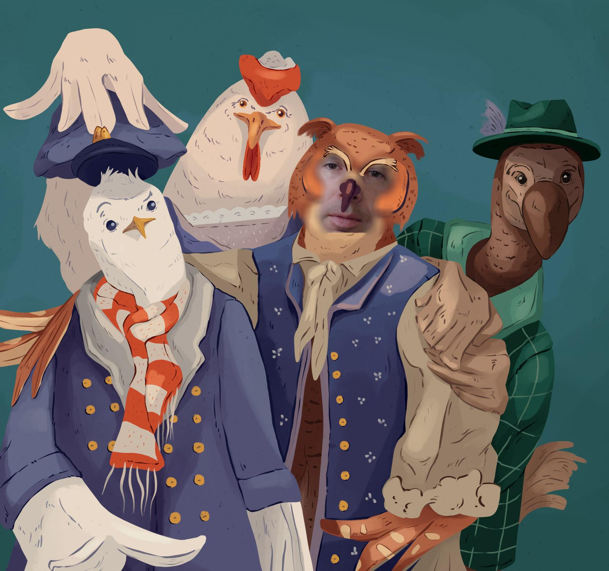
Prenez la pose, recevez votre portrait de famille métamorphosé en personnages de « Ma maison ».
Musée de la civilisation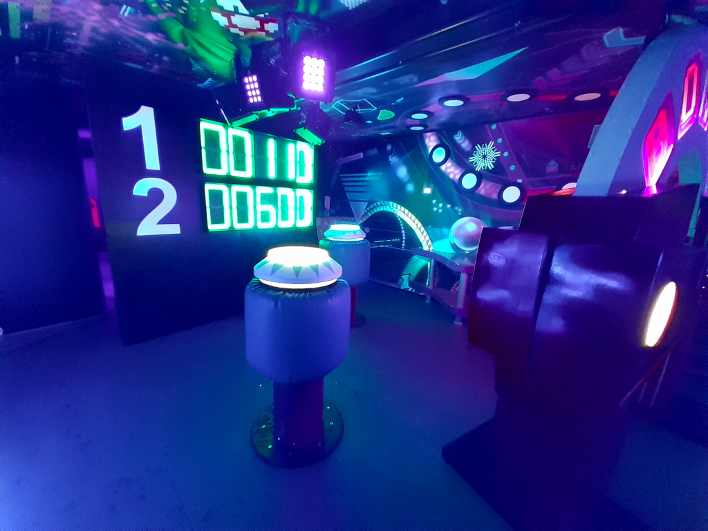
Zone interactive du Palais de Bonhomme.
Matièrs / Carnaval de Québec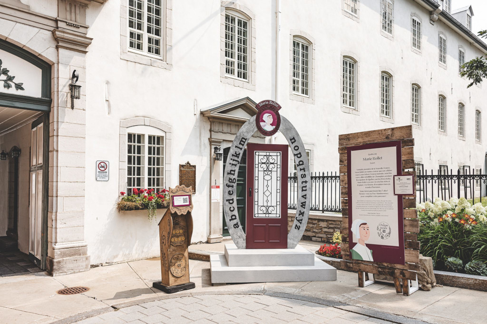
Bornes de validation animées pour un parcours-jeu grandeur nature.
Fêtes de la Nouvelle-France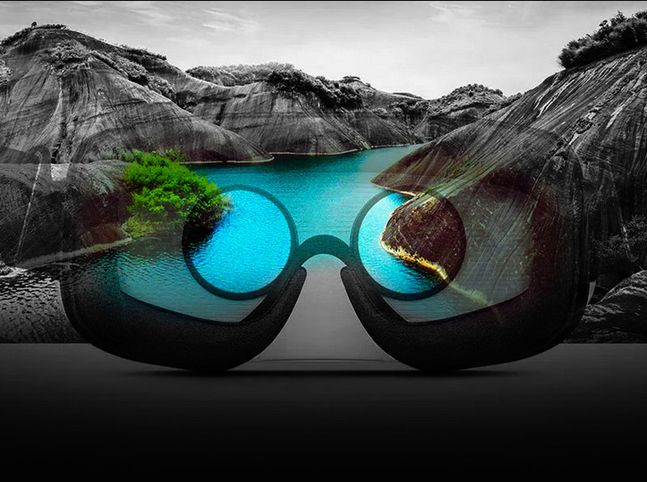
Application de réalité virtuelle pour visualiser des vidéos 360° immersives.
AtlasVR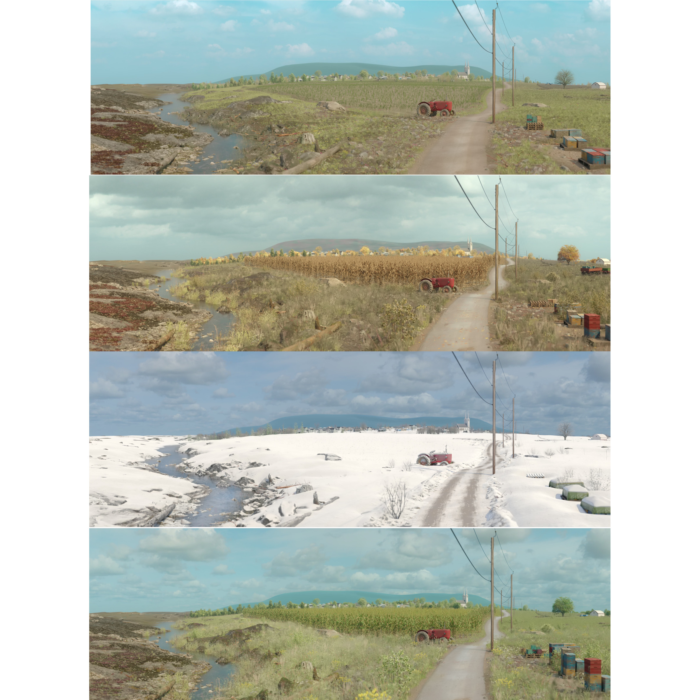
Projection 360° mettant en scène le cycle des saisons dans « Le Québec autrement dit ».
Musée de la civilisation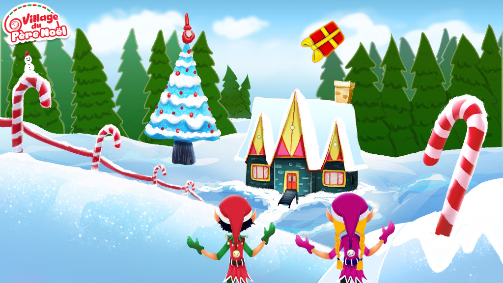
Jeu de détection de mouvement où les joueurs attrapent des cadeaux qui s'envolent.
Village du Père-Noël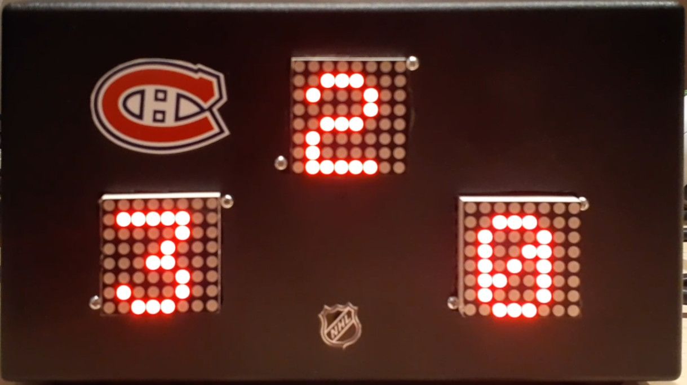
Jumbotron WiFi affichant en direct le pointage de votre équipe préférée.
Les fans du CH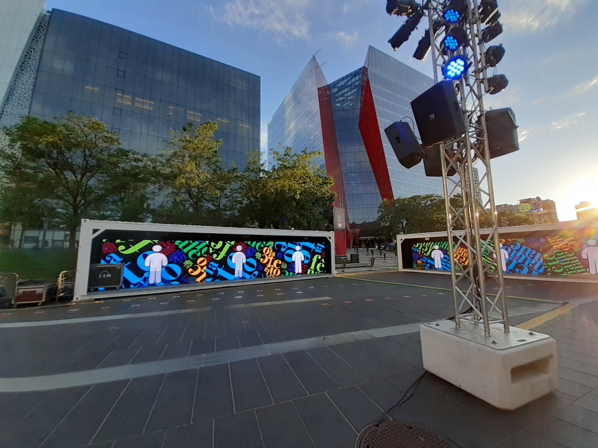
Détection de mouvement interprétée dans le style d'artistes québécois.
Matièrs / Fête nationale du Québec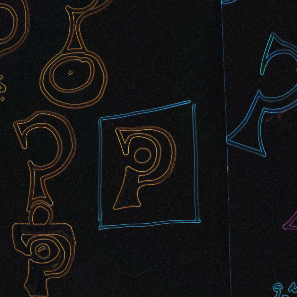
Fondé par Simon St-Hilaire
Je m'appelle Simon. Je conçois et je construis des installations interactives, des expériences en réalité augmentée et des objets connectés pour ceux et celles qui veulent que leurs visiteurs vivent quelque chose, pas juste qu'ils lisent un panneau.
Ce qui distingue mon travail, c'est que je passe autant de temps à imaginer l'expérience qu'à la construire. Un capteur mal placé ou une interaction confuse peut ruiner la meilleure idée — je pense donc le geste du visiteur, l'électronique qui le capte et le logiciel qui y répond comme un seul problème, pas trois contrats séparés.
J'ai livré des projets pour le Musée de la civilisation, le CHU de Québec et le Carnaval de Québec, entre autres. Selon l'ampleur du projet, je travaille seul ou avec un réseau de collaborateurs de confiance — mais c'est toujours moi qui reste responsable du résultat, du premier croquis jusqu'à l'installation qui fonctionne, sur le terrain, devant public.
Appelez-moi ou écrivez-moi sur LinkedIn — je réponds vite, et je vous accompagne peu importe le stade où en est votre projet (418) 934-9169